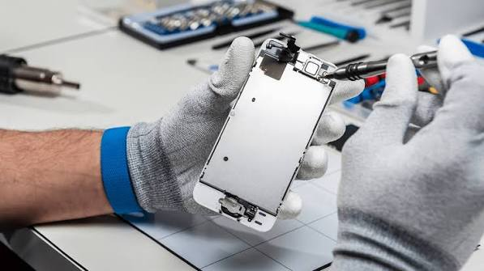

O Técnico de Assistência Técnica
Bem-vindo ao Guia de Profissões e Futuro! Este guia foi criado para ajudar você a explorar diferentes carreiras, compreender as habilidades necessárias e planejar seu futuro profissional. Aqui você encontrará informações sobre a profissão de Técnico de Assistência Técnica, suas responsabilidades, oportunidades no mercado de trabalho e competências necessárias para seguir essa carreira.
O Técnico de Assistência Técnica é o profissional responsável por identificar problemas, realizar diagnósticos, consertar equipamentos e executar manutenções preventivas e corretivas. Ele pode trabalhar com computadores, celulares, televisores, eletrodomésticos, equipamentos eletrônicos e diferentes tipos de máquinas.

Entre suas principais atividades estão a avaliação do estadodos equipamentos, a identificação de defeitos, a substituição de componentes danificados, a instalação de programas e a realização de testes para verificar se os aparelhos estão funcionando corretamente. Além disso, esse profissional também orienta os clientes sobre o uso e a conservação dos equipamentos.
Mercado de trabalho
O mercado de assistência técnica apresenta oportunidades importantes devido à presença cada vez maior da tecnologia no cotidiano das pessoas e das empresas. Computadores, celulares, impressoras e eletrodomésticos são utilizados constantemente e, com o passar do tempo, podem apresentar falhas que exigem manutenção especializada.
Outro fator que favorece essa profissão é a procura por consertos como alternativa à compra de equipamentos novos. Dessa forma, oficinas especializadas, empresas de tecnologia, lojas de eletrônicos e prestadoras de serviços são alguns dos locais onde esse profissional pode atuar.
O técnico também pode trabalhar de maneira autônoma, oferecendo serviços particulares, criando sua própria assistência técnica ou prestando atendimento diretamente nas residências e empresas dos clientes.
Habilidades necessárias
Para trabalhar como Técnico de Assistência Técnica, é necessário combinar conhecimentos técnicos com habilidades comportamentais. Enquanto os conhecimentos técnicos permitem identificar e solucionar problemas nos equipamentos, as habilidades comportamentais ajudam no relacionamento com clientes e colegas de trabalho.
Hard Skills
As Hard Skills são habilidades técnicas e conhecimentos específicos que podem ser aprendidos por meio de cursos, treinamentos, estudos e experiências profissionais. Geralmente, podem ser avaliados por testes práticos, certificados e demonstrações de conhecimento.
Na profissão de Técnico de Assistência Técnica, algumas das principais Hard Skills são:
- Conhecimento em hardware e eletrônica: identificar defeitos, substituir componentes e compreender o funcionamento de equipamentos eletrônicos.
- Manutenção de computadores e celulares: realizar reparos, instalações, substituições de peças e configurações de dispositivos.
- Diagnóstico de problemas: utilizar ferramentas e conhecimentos técnicos para identificar a origem de falhas nos equipamentos.
- Conhecimento em sistemas operacionais: instalar, configurar e solucionar problemas em sistemas como Windows e Linux.
- Conhecimento em redes: configurar conexões de internet, roteadores e redes locais, além de identificar problemas de conectividade.
- Utilização de ferramentas técnicas: trabalhar com multímetros, chaves de precisão, equipamentos de teste e outros instrumentos de manutenção.
- Segurança e proteção de dados: realizar procedimentos de backup, proteger informações dos clientes e respeitar a privacidade dos dados.
- Manutenção preventiva e corretiva: executar procedimentos para evitar falhas e solucionar problemas que já estejam comprometendo o funcionamento dos aparelhos.
Soft Skills
As Soft Skills são habilidades comportamentais, emocionais e interpessoais que influenciam a maneira como uma pessoa trabalha, resolve problemas e se relaciona com outras pessoas. Elas são importantes para garantir um atendimento profissional e eficiente.
Entre as principais Soft Skills de um Técnico de Assistência Técnica, podemos destacar:
- Comunicação: explicar os problemas encontrados e os procedimentos realizados de maneira clara e compreensível.
- Empatia: compreender as necessidades dos clientes e oferecer um atendimento respeitoso.
- Paciência: lidar com diferentes situações, dúvidas e dificuldades sem perder a educação e o profissionalismo.
- Organização: controlar os equipamentos recebidos, as peças utilizadas e os prazos de entrega dos serviços.
- Resolução de problemas: desenvolver estratégias para encontrar soluções eficientes diante de falhas e dificuldades técnicas.
- Responsabilidade: cuidar adequadamente dos equipamentos dos clientes e cumprir os compromissos estabelecidos.
- Proatividade: buscar soluções, antecipar possíveis problemas e demonstrar iniciativa no ambiente profissional.
- Aprendizado contínuo: acompanhar as mudanças tecnológicas e aprender a trabalhar com novos equipamentos e ferramentas.
Diferenças entre Hard Skills e Soft Skills
| HARD SKILLS | SOFT SKILLS |
|---|---|
| Conhecimento em eletrônica e hardware. | Comunicação clara com os clientes. |
| Manutenção de computadores e celulares. | Empatia e paciência no atendimento. |
| Diagnóstico de falhas técnicas. | Capacidade de resolver problemas. |
| Instalação de sistemas operacionais. | Organização e responsabilidade. |
| Utilização de ferramentas de manutenção. | Proatividade e aprendizado contínuo. |
Formação profissional
Para ingressar na área de assistência técnica, é recomendado mrealizar cursos profissionalizantes ou técnicos relacionados à manutenção de computadores, eletrônica, informática e manutenção de equipamentos. Essas formações oferecem conhecimentos teóricos e práticos fundamentais para desenvolver as competências necessárias à profissão.
Além dos cursos, a experiência prática é muito importante. A realização de atividades supervisionadas, estágios etreinamentos permite que o profissional desenvolva habilidades para identificar defeitos, utilizar ferramentas e executar reparos com segurança e qualidade.
Média salarial do Técnico de Assistência Técnica
A remuneração de um Técnico de Assistência Técnica pode variar de acordo com a experiência profissional, a região de atuação, a especialização e a empresa contratante. Confira uma estimativa:
| Nível profissional | Experiência | Salário médio mensal |
|---|---|---|
| Júnior | Até 2 anos | R$ 1.800,00 |
| Pleno | De 2 a 5 anos | R$ 2.500,00 |
| Sênior | Mais de 5 anos | R$ 3.500,00 |
| Especialista | Experiência avançada | R$ 4.500,00 |
Média salarial por região do Brasil
A remuneração de um Técnico de Assistência Técnica também pode variar de acordo com a região onde trabalha. Fatores como custo de vida, demanda por serviços, especialização e oportunidades de emprego influenciam os salários. Confira uma estimativa:
| Região | Salário médio mensal |
|---|---|
| Norte | R$ 2.100,00 |
| Nordeste | R$ 1.900,00 |
| Centro-Oeste | R$ 2.400,00 |
| Sudeste | R$ 2.700,00 |
| Sul | R$ 2.500,00 |
O futuro da profissão
O futuro da profissão de Técnico de Assistência Técnica está diretamente relacionado à evolução da tecnologia. Com o surgimento constante de novos aparelhos, sistemas e equipamentos eletrônicos, a necessidade de profissionais capacitados para realizar manutenção e reparos continua sendo relevante.
Além disso, a preocupação com o descarte de equipamentos eletrônicos e a sustentabilidade fortalece a importância dos serviços de manutenção. Consertar aparelhos pode prolongar sua vida útil, reduzir o desperdício e diminuir a necessidade de substituição por novos produtos.
Portanto, o Técnico de Assistência Técnica possui oportunidades em diferentes setores e pode construir uma carreira promissora, desde que acompanhe as inovações tecnológicas e invista constantemente em sua formação.
Conheça mais sobre a profissão
No vídeo abaixo, você poderá conhecer melhor o trabalho de um profissional da área de assistência técnica, compreendendo suas atividades e a importância da manutenção de equipamentos tecnológicos e as oportunidades no mercado de trabalho.
Áreas de atuação
O Técnico de Assistência Técnica pode escolher diferentes áreas de especialização de acordo com seus interesses e conhecimentos. Entre as principais possibilidades estão:
- Manutenção de computadores e notebooks;
- Assistência técnica de celulares e tablets;
- Manutenção de televisores e aparelhos eletrônicos;
- Reparação de eletrodomésticos;
- Manutenção de impressoras e periféricos;
- Suporte técnico em informática;
- Manutenção de equipamentos industriais.
Cada especialização apresenta diferentes desafios e oportunidades, permitindo que o profissional desenvolva conhecimentos específicos e encontre a área com a qual mais se identifica.
Equipe
A equipe foi composta por:
Emilly Raquel da Silva Costa
Francisco Marcelo Costa da Silva
Marcos Vinicius Martins Ferreira
Maria Isabella Araújo Clementino
Victor Hugo Gonçalves de Freitas